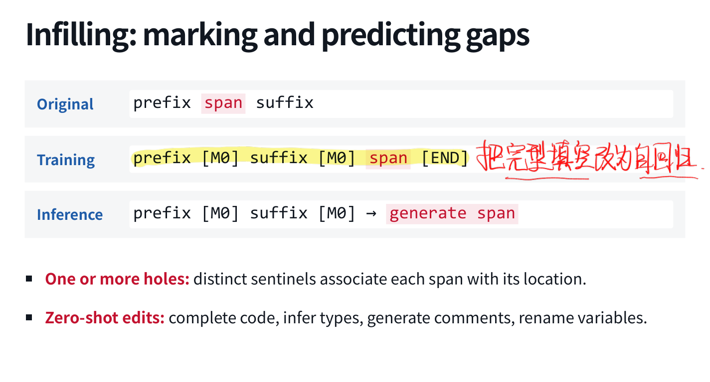
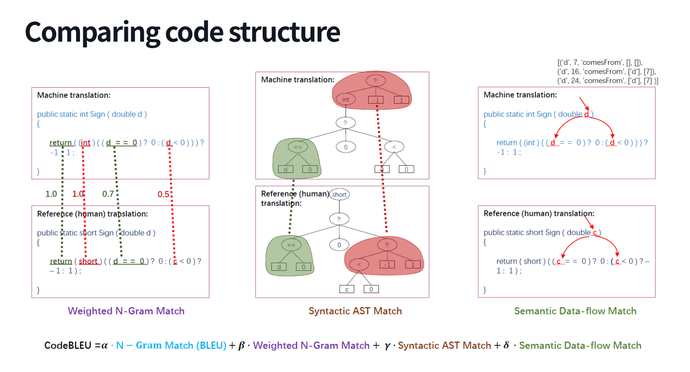
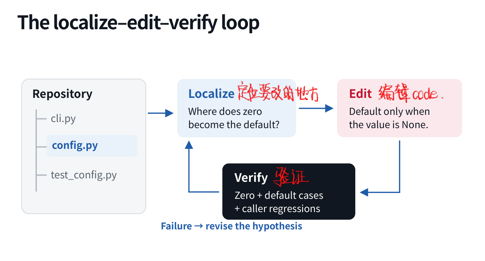
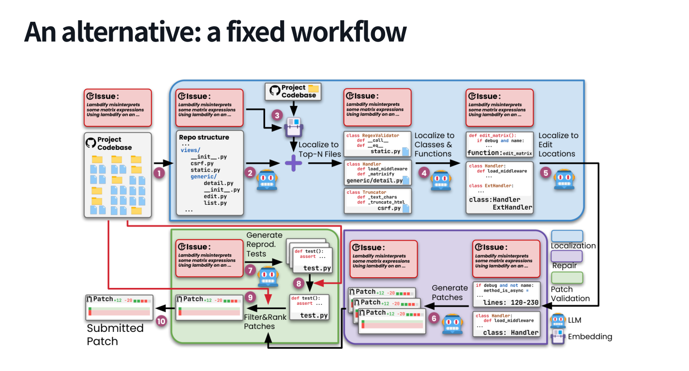
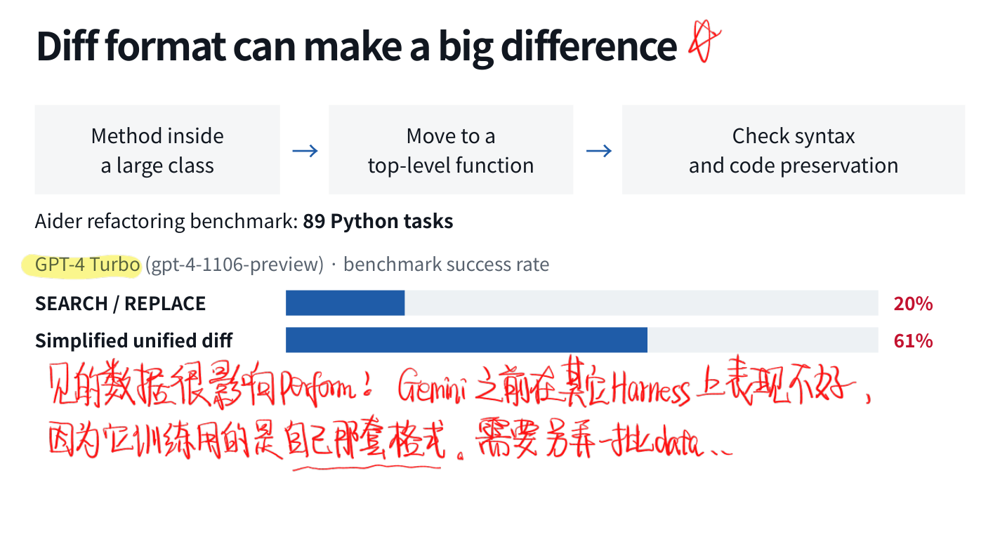
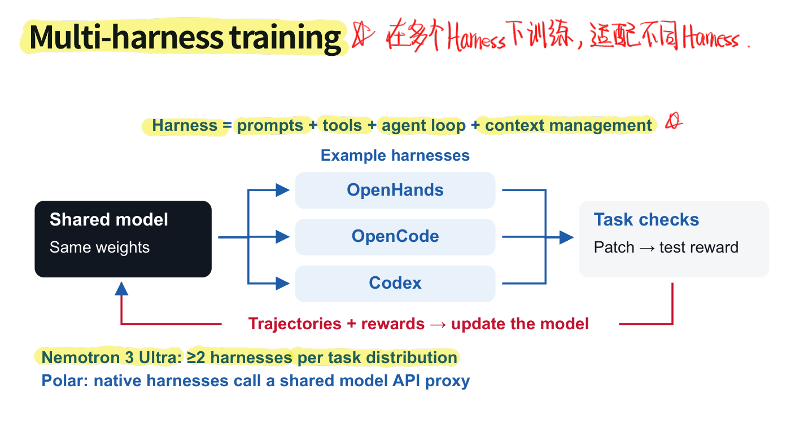
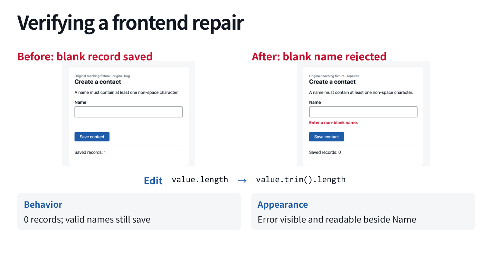

这几年对 Coding 的期待变得有点快：开始是补全一行，后来是写一段函数，现在是把整个仓库交给 Agent，让它自己找问题、改代码、跑测试。三者需要的能力有重叠，但不能拿一个函数生成分数，就推断它能独立维护软件项目。这讲按模型、工具和交互三条线来学。对我来说，最值得多想一下的是代码数据怎样组织、修改格式怎样影响模型，以及「测对了」到底包含多少工作。
6.1 代码能力的三个层次
从 prompt 写代码，需要理解编程语言、API 与惯用法；编辑代码，需要同时考虑修改位置前后文；从 specification 得到正确行为，则还要推理约束和边界。放到仓库中，还要处理文件关系、依赖与已有工程惯例。
训练路径也因此不只是喂一堆 .py：预训练学语言和代码结构，mid-training 调整代码 / 文本 / 数学配比并延长上下文，后训练再用示范或执行奖励改善解题与交互。Prompt、Tools、LLM 三者最终一起决定 Coding Agent 的表现。
6.2 预训练：代码也有数据工程
混合语料可以包括网页、技术文档、数学、源代码、issue、commit 和 notebook。语言建模目标仍是：
难的是 长什么样。代码要保留缩进、文件边界、API 与文本之间的对应；清洗时过滤乱码、重复 dump 和低价值生成内容，去掉 fork、vendored libraries、近重复文件及复制题解，并记录来源、许可证、时间与敏感信息处理。
数据划分也不能只随机拆文件：同一仓库的相近实现、同一题目的复制解法，可能同时落进训练和测试。按 repository 或 problem family 隔离、对评估题去污染，才能比较接近我们想测的泛化能力。
Tokenizer 也不是把自然语言那套处理原样套过来。Byte-level BPE 可以同时处理代码与文字，但标识符可能跨多个 token，空格、tab、换行又带有语法与字符串含义。常见连续空白可以合并为 token，提高长度效率；不能直接把缩进清掉，说自己做了「文本归一化」。
StarCoderBase 是一个有代表性的例子：15.5B 参数、1T tokens、80 多种语言，数据不只源代码，还包括 issues、commits 和 notebooks。训练中大多数语言的代码表现随 token 增加而改善；同时仍要看各领域 held-out loss 与执行任务，不能只用一个总 loss 判断所有代码能力。
6.3 Mid-training：更多代码，也别把其他能力练没了
Code Llama 从 Llama 2 继续进行大规模代码训练；这类阶段仍可以采用语言建模目标，只是语料与长度分布改变。Qwen2.5-Coder 的一个数据混合对比很能说明问题：
| Code / Text / Math | Common code | MATH | MMLU |
|---|---|---|---|
| 100 / 0 / 0 | 49.8 | 10.3 | 23.8 |
| 70 / 20 / 10 | 48.3 | 33.2 | 62.9 |
代码指标略有变化，数学与通用能力却差很多。这个比例当然不是万能配方，但它说明理解需求、推理与其他知识也会影响代码任务。专门化训练要检查收益，也要看回归。
长代码上下文更要有组织。比如 types.py 定义某个值可以是 None，worker.py 传递这个结构，caller.py 才需要补空值判断。把相关文件、路径和依赖放成连贯序列，比随机拼成长文本更有意义。可以沿依赖图筛选相关文件，也要控制仓库级上下文带来的成本。
长度上可以先从 8K 到 32K，再通过合适的位置扩展到更长；但验证应覆盖跨文件补全、infilling 与短上下文能力，不能只检查「程序没有因为输入太长报错」。
6.4 Infilling：把填空变成自回归
这个构造我挺喜欢。常规续写只看前缀，但代码编辑经常需要看后缀。例如：
def is_positive(x: int) -> ____:
return x > 0
函数体在缺口右侧，已经给出了返回类型 bool 的证据。InCoder 把 prefix + span + suffix 改排成：
prefix [M0] suffix [M0] span [END]
推理时给出前缀、后缀与缺口标记，模型继续生成 span。多缺口可以使用不同 sentinel 对应位置。模型仍在自回归，只是待预测内容被排到了已知上下文后面。 类似地，类型推断、补注释、重命名都可以写成填空。

在 HumanEval 衍生的 infilling 实验中，单行 / 多行填空的测试通过比例分别为：普通左到右单候选 48.2% / 24.9%，生成 10 个候选再用后缀重排为 54.9% / 28.2%，直接利用后缀生成的 causal-masked infilling 为 69.0% / 38.6%。生成时用上右侧信息，和生成完再筛选，差别很大。
相同 52B-token 预算下，causal masking 的 HumanEval / MBPP pass@1 为 8.0% / 10.9%，对应左到右目标为 6.0% / 8.9%。至少在这组消融里，加入填空目标没有以牺牲普通补全为代价。
代码数据还有更多结构可用：OctoPack 利用 commit 前后和消息学习修改；DrRepair 用错误代码与诊断学习修复；CodeRL 用执行测试结果提供奖励；CodeExecutor 学程序执行过的语句与状态。源代码、修改历史和运行反馈，分别提供不同监督。
6.5 如何评估生成代码？
文本与结构指标
Exact Match 检查是否与参考完全相同，BLEU-4 比较 n-gram 重合。问题很直观：x > 0 和 x >= 0 只差一个符号，在零上却不同；not (x <= 0) 文本变了，对整数却等价。
CodeBLEU 在 n-gram 之外加入加权 n-gram、AST 语法结构与 data-flow 匹配；CodeBERTScore 则把 prompt 与代码编码成上下文向量，按 token 间最佳相似匹配构造 precision、recall 和 F-score。它们比裸文本重合更贴近代码结构与表示，但仍属于代理指标。

执行行为
运行代码可以接受不同的正确实现，也能直接发现边界语义错误。HumanEval 是 164 个 Python 函数补全任务，用隐藏单测验证；CodeContests 则更接近算法竞赛，从完整题面生成可编译执行的程序。
但执行测试有三个前提：测试覆盖足够、依赖与环境准备正确、执行隔离且有时间和内存限制。有限测试通过只是覆盖范围内的证据，不是一般正确性的证明。设计可靠测试本身就很难，这个问题不能因为答案是程序就突然消失。
多次采样与非功能性要求
pass@k 是 次采样中至少一个候选通过全部测试的概率。若生成 个样本，其中 个正确，常用估计式为：
它衡量候选覆盖能力，未解决真实系统怎样选出那个正确答案。候选排序器、测试反馈与额外执行成本，也都应该算进方案。
「代码更快」又是另一类要求。相同输出之外，需要在可比较条件下测 runtime、memory 或 latency；可维护性和安全性可能结合静态检查与参考修改。NoFunEval 的 397 个编辑任务就涉及 speedup、DiffBLEU、CodeQL 等不同指标，但参考修改相似度也不能代替真实性能。评估方式要对应需求。
6.6 用执行结果训练代码推理
流程可以写成：采样推理与最终代码 → 运行测试 → 得到 reward → 更新模型 → 再采样。像 、 这样的题，循环求和可能数学上没错，却根本跑不完；使用 才兼顾效率，误写成 又会在 立即失败。
执行奖励因此能提供很明确的区分，但取决于测试是否覆盖大输入与边界。DeepCoder 的训练曲线还提醒我区分 训练时增加 response 长度上限 与 训练结束后只增加推理预算：16K 到 32K 的训练调整，和用 64K evaluation 得到更高成绩，是不同来源的收益。把两者都叫「RL 提升」会漏掉 inference scaling 的贡献。
6.7 Agentic Coding：Localize—Edit—Verify
单步代码任务给出相对自包含的 prompt；Agentic coding 接受 issue 与现有文件，要自己搜索、编辑、运行测试，交付 patch 和证据。拿配置的例子说：
return config.get("retries") or 3
用户设置 retries=0，结果却变成 3。先搜索 retries，沿配置输入、默认值逻辑与调用方追踪，复现零在哪一步被覆盖，再判断原因是 Python 把零当作 falsy。修改可以是：
value = config.get("retries")
return 3 if value is None else value
这里假设缺失与 None 都使用默认值；如果两者在接口中有不同语义，还需单独区分。验证至少包括缺失、None、零、正数，以及调用方回归。若零仍然消失，继续定位别处的转换；若默认值变错，再修规则。测试反馈应改变下一步假设。

定位也不能只靠关键词命中。一个 flag、loader 与 retry loop 都可能出现同一个词；LocAgent 一类方法利用代码依赖图找到相关邻域，再通过执行验证。长上下文可以帮助，但没必要每次把整个 repo 倒进去。
Agentless 则提供固定 workflow 的对照：从仓库结构逐级定位文件、类 / 函数与编辑位置，生成候选补丁和复现测试，过滤与排序，最后提交。它说明一些任务可以用明确流程组织，不必把所有环节都开放成自由 Agent loop。

6.8 编辑接口会影响模型表现
只给 Shell 也能工作：rg / cat 读和搜，sed / Python / patch 改文件，测试和构建命令做验证，返回 stdout、exit status 与 timeout。通用性很强，但 shell quoting、替换范围与文件操作也都需要模型正确处理。
专用编辑工具可以减少这些负担，常见形式包括：
| 形式 | 好处 | 问题 |
|---|---|---|
| 整文件输出 | 简单，应用直接 | 重复未修改代码，长文件成本高 |
| Search / Replace | 紧凑，只发旧块与新块 | 旧块必须能无歧义匹配 |
| Unified Diff | 标准，提供上下文 | 行号、hunk 长度和格式可能出错 |
| 文件操作型 patch | 显式添加 / 更新 / 删除及上下文 | 模型仍需熟悉对应协议 |

Aider 的 89 个 Python 重构任务中，同一 GPT-4 Turbo 配合 Search / Replace 得到 20%，简化 unified diff 得到 61%。这个例子很能说明工具格式不是无关紧要的包装。模型训练时更熟悉哪种编辑表示，换 Harness 后会不会不适应，值得实际测；不能只把所有 parser 失败都归成模型不会写代码。
6.9 从可运行任务到 Agent 训练
SWE-bench 给 issue 与修改前仓库，模型产生 patch，评估器恢复环境、应用修改、运行测试。Fail-to-Pass 检查所需修复，Pass-to-Pass 检查原有行为。只修好新测试却弄坏旧功能，不能算完整解决。
训练前要先把环境准备成 runnable task：文件版本、依赖、运行命令、需求和复现条件，以及修改前失败、正确修复后恢复的检查。SWE-Gym 等环境建设很关键；环境不稳定时收集来的「失败轨迹」，可能根本不是模型做错。
多步 RL 继续优化 。模型动作包括搜索、编辑、测试和结束，工具返回是后续条件；最终修复奖励稀疏，不能直接指出前面哪一次定位或修改造成了失败，这就是 credit assignment 问题。R2E-Gym 等路线在可执行环境里收集和训练这类交互。
数据也可以合成。SWE-smith 从测试通过的基线出发，修改实现而不改测试，保留造成新失败的变体，再构造修复任务。比如把 value is None 改成 not value，让原本通过的零值用例失败；恢复后又通过。这至少建立了一个可执行的错误信号，但合成 bug 的分布是否像真实 issue，还需要另外评估。
训练规模与推理规模都能带来变化：增加轨迹训练学生，或者多采样 rollout 并由 learned verifier 选择，都可能提高结果。后者既依赖候选覆盖，也依赖排序器，不能只报采样数。
跨语言任务更要先看项目配置：Python 的 pyproject.toml、TypeScript 的 package.json、Rust 的 Cargo.toml，分别决定怎样安装、构建与测试。默认所有 repo 都能 pytest，通常不是一个好主意。
6.10 Multi-harness Training
Harness 包括 prompts、tools、agent loop 和 context management。相同模型在不同 Harness 中会面对不同工具名、编辑格式和观察。多 Harness 收集训练数据，可以让模型少依赖某一种系统惯例；例如共享模型 API，接入 OpenHands、OpenCode 等原生循环，按相同任务标准检查 patch。

这不是只把数据文件混起来就够了。消息格式、工具语义和最终渲染仍需对齐，下一讲 SFT 会继续讲这个问题。
6.11 前端：代码通过不代表界面能用
前端也遵循定位—编辑—验证，但验证多了浏览器行为与视觉状态。比如联系人姓名只检查 value.length，一串空格也能保存；改为 value.trim().length 后，应确认空白输入显示错误且不新增记录，正常姓名仍能保存，错误提示也真的可见、可读。

Browser Agent 可以观察界面再决定下一步，适合自适应探索；Playwright 之类脚本则把输入、点击、断言和截图写成可重复流程。截图可以辅助人工 / 模型视觉检查，也可以与认可的基线比较，但不是每个带图片的 issue 都该按图片相似度打分。SWE-bench Multimodal 也仍然通过任务测试评价补丁。
更广的软件开发还包括本地化、应用与库开发、维护、测试和 CI；代码行为预测模型也可能帮助执行与规划。学到这里我反而觉得，「能写代码」这个标签太宽了。真正可信的 Coding Agent，得在仓库、工具和环境中把修改的依据与结果一起交代清楚。